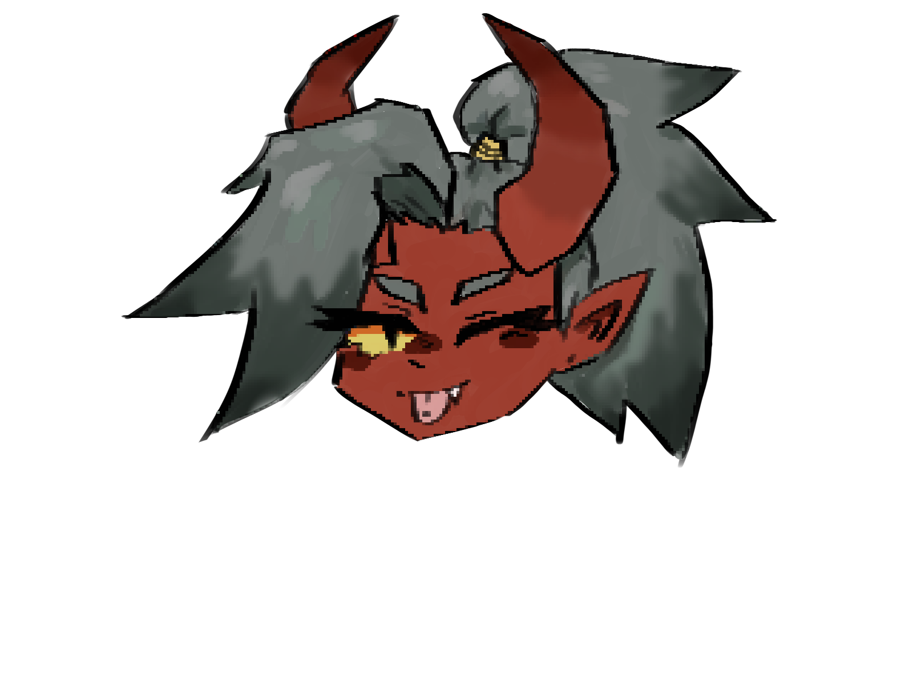

Characters in Magna Ruina

The most important character.. YOU!
Magna Ruina's character maker
You are in charge of your character's personality and looks, but your character's backstory is slightly more guided. Players will take a small personality quiz that affects the suggested backstory- but still, have the option to choose a different route.
- The noble/fellow student (from the Capital City)
- The farmer (from the outlands)
- The sailor (from the coast/islands)
- The empirical (from any places government)
Each route will dictate micro-events in the game's run, for example: choosing the farmer backstory, your character will have 2 extra inventory slots. If you choose the mercenary backstory, you get natural buffs that assist you in combat minigames. Or if you choose the druid, you will have more dialogue options with Lo'lea.


Dateable Characters in Magna Ruina
Here are all of the dateable options in Magna Ruina, as well as their backstories, a few images of concept art, and idealized voice actor claims! Weather or not we actually secure VA's in Magna Ruina is still up for discussion, but hopefully you knowing our dream VA cast will help illuminate the vibes of each character.
Cal
Description
Cal (the paper) (he/him): An incredibly intelligent calico cat-boy with mysterious origins (not really, he just doesn't want people to know he's rich) and a strong determination for recognition. He's an ambitious noble researching the mysteries of The Collapse after discovering the Slividian Cave Systems; On the surface, he's aloof and selfish. Despite his standoffish demeanor, his determination will see his aspirations and goals to the end.
Concept Art


Dream Voice Actor: Avi Roque! Example Below:
Dezmo
Description
Dezmo Ptera: (snail) (he/him): “Just another researcher.” Dez is a bat-person who was already exploring the cave system for 'personal research,'' and offered the party the information he had already found. He tags along with the spelunkers to break up the group's tension. He's lazy, smug, sly, often plays dumb, a bit of a flirt, mischievous, and laid back.
Concept art:


Dream Voice Actor: Donald Glover! Example Below:
Verm
Description
Verm: (finger guns) (they/them): A fuzzy little moth person that lived in the cave systems throughout their life. A part of the Acitus colony in the Slividian cave system, but after the recent earthquakes from the last 4 months, they are separated from this massive group of moth-people. They are sweet, and kind, but also ignorant and immature. With little experience being close to someone, Verm doesn't know how to act in a deeper relationship. They are more than happy to guide the spelunker team in their expedition because they are familiar with the caves, and are in a dire search to find their colony again.
Concept Art

Dream Voice Actor: Christian Banas! Example Below:
Ziva

Description
Ziva (the rock) (she/they): Hot-headed Tiefling that often seems annoyed, and pretty dumb, but very resilient and tough. Ziva has been picking up odd jobs on land since the minor earthquakes on Aiio started. The quakes by the coast of Strönd were almost unnoticeable, but at sea, storms and massive waves are causing the pirate to dock her ship. Ziva was intrigued by the spelunking mission because of its possible link to whatever was causing the awful weather at sea- but she jumped on board as soon as they found out how much the spelunkers were paying for the mercenary. A perfect job for a 6'4 buff tiefling woman who is more than happy to be the muscle for this mission.
Concept Art


Dream Voice Actor: AJ Michalka! Example
Lo'lea

Description
Lo'lea (the scissors) (she/her): An elf cleric from the College of Aleanbar, Lo'lea was forced to accompany Cal. She's a seemingly gentle woman with a calm disposition. However, as you grow closer, you learn that under the calm, there is a fiery soul. Cunning and clever, she is able to turn anything around in her favor. (Ziva pierced her tongue.. Things went wrong.)
Concept Art

Dream Voice Actor: Manami Numakura: Example Below!
NPC's in Magna Ruina
There is so far only one cannonicaly and planned out NPC for Magna Ruina, but this will definetly be changed as the game is developed more. There will be plenty of NPCs to interact with in the future, but these characters from here on out will be non-romancable.
Alba


Description
Alba Ptera: (she/her). No spoiler-free information is available besides the fact that she is Dezmo's sister, who has a syrupy sweet demeanor.
Dream Va: Kira Buckland: Example Below!!